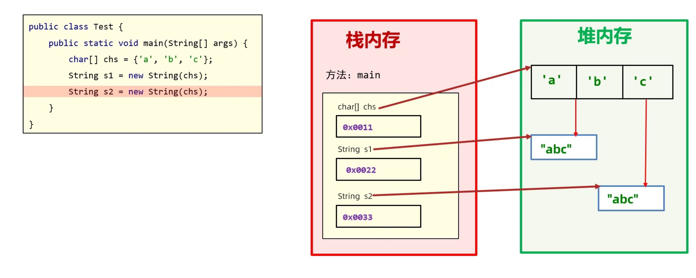
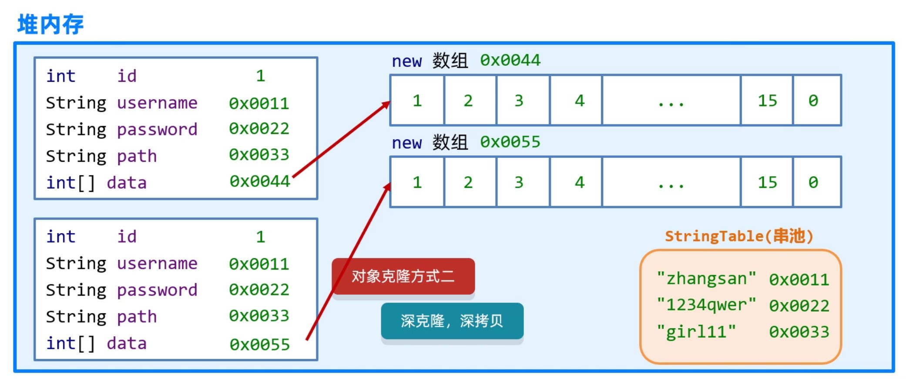

04_Java常用API
一、API
1. API 概述
API (Application Programming Interface) ：应用程序编程接口。 Java 中的 API 指的就是 JDK 中提供的各种功能的 Java 类，这些类将底层的实现封装了起来，我们不需要关心这些类是如何实现的，只需要学习这些类如何使用即可，我们可以通过帮助文档来学习这些API如何使用。
2. 如何使用 API 帮助文档
Overview (Java SE 11 & JDK 11 )
- 打开 API 帮助文档
- 点击显示找到索引
- 在搜索框中输入类名回车
- 查看类所在的包
- 查看类的描述
- 查看构造方法
- 查看成员
二、字符串
1. String 类
1.1 String 概述
- 所有字符串文字都被实例为此类的对象
- 字符串是常量，它们的值在创建之后不能更改
1.2 String 对象的创建
- 直接赋值
当使用双引号直接赋值时，系统会检查字符串常量池中是否存在该字符串，如果存在则复用，不存在再创建新的，这种方式创建
String可节省内存

- 构造方法 new 出来都在堆中开辟一块新的空间，这种方式创建重复的
String不会复用1
String s = new String();
String()
初始化新创建的 String 对象，使其表示空字符串
String(String original)
初始化新创建的 String 对象，使其表示与参数相同的字符串
String(byte[] bytes)
通过 ASCⅡ 编码字节数组构造新的 String
String(char[] value)
分配新的 String ，使其表示当前包含在字符数组参数中的字符序列

1.3 字符串的比较
==的作用： 只能比较基本数据类型，不能比较引用数据类型- 比较基本数据类型：比较的是具体的数据值
- 比较引用数据类型：比较的是对象的地址值
equals()方法的作用
boolean equals(Object anObject) 将此字符串与指定的对象比较
boolean equalsIgnoreCase(String anotherString) 将此 String 与另一个 String 比较，不考虑大小写
1.4 字符串的遍历
char charAt(int index) 返回指定索引处的值
int length() 返回字符串的长度
1 | |
1.5 字符串的常用操作
1.5.1 拼接和逆置
- 字符串的拼接可直接使用
+ - 字符串逆置可以使用空字符串不断拼接倒序遍历的字符串 后面的 StringBuilder 类拼接和逆置更加方便
1.5.2 截取
String substring(int beginIndex) 返回一个新字符串，它是截取从 beginIndex 到末尾的子串
String substring(int beginIndex, int endIndex) 返回一个新字符串，它是从 beginIndex 到 endIndex 的子串（包左不包右）
1.5.3 替换
String replace(char oldChar, char newChar) 返回一个新字符串，使用 newChar 替换此字符串中出现的所有 oldChar
1.5.4 转换为字符数组
char[] toCharArray() 将此字符串转换为一个新的字符数组。
2. StringBuilder 类
2.1 StringBuilder 概述
StringBuilder可以看成是一个容器，创建之后里面的内容是可变的，又叫可变字符串- 作用：提高字符串的操作效率，在拼接和反转中常用
2.2 StringBuilder 的构造方法
StringBuilder()
构造一个空白可变字符串，其中不包含任何字符，初始容量为16个字符
StringBuilder(String str)
构造一个初始化为指定字符串内容的可变字符串
2.3 StringBuilder 的常用方法
因为 StringBuilder 是可变的，所以不需要像
String 一样去接收返回值，直接操作的是
StringBuilder 本身
StringBuilder append(任意类型)
添加数据，并返回对象本身
StringBuilder reverse()
反转容器中的内容
int length()
返回长度（字符数）
StringBuilder 是帮助处理字符串的工具，处理之后可用
toString() 转换为 String 继续处理
String toString() 将 StringBuilder 转换为 String
2.4 链式编程
调用方法时，不使用变量接收其返回值，直接调用其他方法
1
String s = new StringBuilder("abcd").reverse().toString();
3. StringJoiner 类
3.1 StringJoiner 概述
StringJoiner跟StringBuilder一样，也可以看成是一个容器，创建之后里面的内容是可变的- 作用：构造有分隔符的字符序列，并且可以指定前缀开头和后缀结束
3.2 StringJoiner 的构造方法
StringJoiner(CharSequence delimiter)
创建一个 StringJoiner 对象，指定拼接的间隔符号
StringJoiner(CharSequence delimiter, CharSequence prefix, CharSequence suffix)
创建一个 StringJoiner 对象，指定拼接的间隔符号、开始符号、结束符号
3.3 StringJoiner 的常用方法
StringJoiner add(CharSequence newElement)
添加数据，并返回对象本身
int length()
返回长度（所有字符的个数）
String toString()
返回拼接之后的字符串
1 | |
4. 字符串相关类底层原理
4.1 使用 + 拼接字符串
- 拼接时没有变量：
- 触发字符串的优化机制，在编译的时候已经是最终结果了，会复用字符串常量池中的字符串
1
2String s = "aa" + "b" + "ccc";
//编译的 class 文件中是 String s = "aabccc";
- 触发字符串的优化机制，在编译的时候已经是最终结果了，会复用字符串常量池中的字符串
- 拼接时有变量：
- 在 JDK8 之前，底层会创建一个
StringBuilder对象，然后调用其append()方法进行拼接，拼接后再调用toString()方法转换成String类型，而toString()方法的底层是new了一个字符串对象。因此每使用一次+，至少会创建一个StringBuilder对象和一个String对象 - 在 JDK8 之后，系统预估字符串拼接之后的总大小，把要拼接的内容都放在数组中，此时也是产生一个新的字符串
- 在 JDK8 之前，底层会创建一个
有变量参与字符串拼接时，在内存中创建很多对象，浪费空间和时间，浪费性能，建议使用
StringBuilder 或 StringJoiner
4.2 使用 StringBuilder 拼接字符串
- 所有要拼接的内容都会往
StringBuilder中放，不会创建很多无用空间，节省内存，提高效率
int capacity()
返回当前容量
- 长度：实际存多少
- 容量：最多存多少
StringBuilder 扩容机制：
- 默认创建一个容量为 16 的字节数组
- 添加的内容小于容量，直接存储
- 添加的内容大于容量，扩容为 原来的容量 * 2 + 2
- 如果扩容后还不够，扩容到实际长度
5. 正则表达式
5.1 正则表达式基本规则
boolean matches(String regex)
判断此字符串是否与给定的正则表达式匹配
IDEA 中 any-Rule 插件提供常用正则表达式
1 | |
5.2 爬虫
5.2.1 本地数据爬取
1 | |
5.2.2 网络数据爬取
1 | |
5.3 爬取方法
String replaceAll(String regex, String replacement)
将符合正则表达式 regex 的部分替换为 replacement
String[] split(String regex)
将字符串从符合正则表达式的部分进行切割
1 | |
三、Math 类
1. Math 概述
Math不可实例化，方法都是静态的，可以直接通过类名调用Math包含基本数字运算
2. Math 的常用变量
static double E
比任何其他值更接近 e ，自然对数的基数
static double PI
比任何其他值更接近 π，圆的圆周与其直径之比
3. Math 的常用方法
static int abs(int a)
返回参数的绝对值没有正数与负数对应时返回值会出错，例如 int -2147483648 ~ 2147483647，abs(-2147483648)会出错
static double ceil(double a)
返回大于或等于参数的最小数学整数（向上取整）
static double floor(double a)
返回小于或等于参数的最大数学整数（向下取整）
static int round(float a) 返回与参数最接近的 int （四舍五入）
static int max/min(int a, int b)
返回两个参数中的较大值/较小值
static double pow(double a, double b)
返回 a 的 b 次幂
static double sqrt(double a)
返回参数的正数平方根
static double cbrt(double a)
返回参数的立方根
static double random()
返回 [0.0, 1.0) 的随机数
四、System 类
1. System 概述
System不可实例化，方法都是静态的，可以直接通过类名调用System包含了系统操作的常用方法
2. System 常用方法
static void exit(int status)
终止当前运行的Java虚拟机
static long currentTimeMillis()
以毫秒为单位返回当前系统时间（可用来计算程序运行时间）时间原点：1970年1月1日00:00:00 我国在东八区有8小时时差
static void arraycopy(Object src, int srcPos, Object dest, int destPos, int length)
从 src 数组的 srcPos 索引开始，复制到 dest 数组的 destPos 索引开始，复制 length 个值
1 | |
五、Runtime 类
1. Runtime 概述
- 每个 Java 程序都有一个
Runtime实例，它允许程序与运行程序的环境交互 - 应用程序不能主动创建自己的运行时实例，可以从
getRuntime方法获得当前程序的运行时实例
2. Runtime 常用方法
static Runtime getRuntime()
返回与当前 Java 程序关联的 Runtime 对象
void exit(int status)
停止虚拟机
int availableProcessors()
获取 CPU 线程数
long maxMemory()
返回 JVM 能从系统中获取的总内存大小（单位 byte）
long totalMemory()
返回 JVM 已经从系统中获取的总内存大小（单位 byte）
long freeMemory()
返回 JVM 剩余内存大小（单位 byte）
Process exec(String command)
运行 cmd 命令
1 | |
六、Object 类
1. Object 概述
Object是Java中的顶级父类，所有类都直接或间接的继承于Object类- 很少创建
Object类的对象，更多的是创建Object类的子类对象
2. Object 的构造方法
Object() 构造一个新对象
3. Object 的常用方法
String toString()
返回对象的字符串表示形式
1 | |
boolean equals(Object obj)
比较两个对象是否相等
1 | |
protected Object clone()
创建并返回此对象的副本
对象克隆是把 A 对象的属性值完全拷贝给 B 对象，也叫对象拷贝，对象复制
浅克隆：基本数据类型拷贝数值，引用数据类型拷贝地址

深克隆：基本数据类型拷贝数值，字符串复用，引用数据类型重新创建新对象 
- 重写
Object中的clone()方法 - 让
JavaBean类实现Cloneable接口 - 创建对象并调用
clone()强转赋值
1 | |
Object 中的 clone()
默认是浅克隆，实现深克隆需要重写
1 | |
使用第三方工具 GSON 可更方便地实现深克隆
- 在模块中新建 lib 文件夹
- 将第三方 jar 包导入其中
- 右键选择 Add as Library
1 | |
七、Objects 类
1. Objects 概述
Objects不可实例化，方法都是静态的，可以直接通过类名调用Objects提供了一些对象常见操作的方法
2. Object 的常用方法
static boolean equals(Object a, Object b)
先做非空判断，再比较两个对象是否相等（默认还是比较地址值）
static boolean isNull(Object obj)
判断对象是否为 null，为 null 返回 true，否则返回 false
static boolean nonNull(Object obj)
判断对象是否为 null，非 null 返回 true，否则返回 false
八、数值类
1. BigInteger 类
1.1 BigInteger 概述
- 可以使用
BigInteger进行大整数的计算 BigInteger对象一旦创建，值不能发生改变- 底层使用分段存储，每 32 bit 位分为一段存入
int数组
1.2 BigInteger 的构造方法
BigInteger(int num, Random rnd)
获取随机大整数，均匀分布在 [ 0 , 2 ^ num - 1 ] 的范围内
BigInteger(String val)
将指定的十进制整数字符串转换为大整数
BigInteger(String val, int radix)
将指定进制的整数字符串转换为大整数
1.3 BigInteger 的常用方法
static BigInteger valueOf(long val)
返回一个 BigInteger，其值等于指定的 longBigInteger 内置了 -16~16 的缓存数据，在此范围内会直接返回缓存池中数据的引用，而不是创建对象，超出范围再创建新的对象
BigInteger add(BigInteger val)
加法
BigInteger subtract(BigInteger val)
减法
BigInteger multiply(BigInteger val)
乘法
BigInteger divide(BigInteger val)
除法
BigInteger[] divideAndRemainder(BigInteger val)
返回值 0 索引代表商，1 索引代表余数
BigInteger pow(int exponent)
次幂
boolean equals(Object x)
比较是否相等
BigInteger max/min(BigInteger val)
返回较大值/较小值的对象（不再创建新的对象）
int intValue()
转换成 int 类型整数
2. BigDecima 类
2.1 BigDecima 概述
- 可以使用
BigDecima表示很大的小数和进行小数的精确计算 BigDecima对象一旦创建，值不能发生改变- 底层使用 ASCII 码表将字符存入
byte数组
2.2 BigDecima 的构造方法
BigDecimal(double val)
构造结果可能不可预测，不准确
BigDecimal(int val)
将 int 转换为大小数
BigDecimal(String val)
将字符串精确转换为大小数
2.3 BigDecima 的常用方法
static BigDecimal valueOf(double val)
返回一个 BigDecimal，其值等于指定的 doubleBigDecimal 内置了 0~10 的整型缓存数据，在此范围内会直接返回缓存池中数据的引用，而不是创建对象，超出范围再创建新的对象
BigDecimal add(BigDecimal augend)
加法
BigDecimal subtract(BigDecimal subtrahend)
减法
BigDecimal multiply(BigDecimal multiplicand)
乘法
BigDecimal divide(BigDecimal divisor, MathContext mc)
除法（除不尽要用下面的）
BigDecimal divide(BigDecimal divisor, int scale, RoundingMode roundingMode)
指定保留位数 scale 和舍入模式 roundingMode 的除法
1 | |
九、时间日期
- 格林威治/格林尼治时间 GMT（Greenwich Mean Time）：皇家格林威治天文台的标准时间，因地球自转不均匀导致不准确，现已弃用
- 协调世界时 UTC（Coodinated Universal Time）：使用原子钟确定时间，由于英文（CUT）和法文（TUC）的缩写不同，作为妥协，简称UTC
tips: 由于中国处于东八区（GMT+08:00）是比世界协调时间/格林尼治时间（GMT）快8小时的时区，当格林尼治标准时间为0:00时，东八区的标准时间为08:00。
1. 时间类
1.1 Date 类
Date是JDK写好的用来描述时间的JavaBean类，精度为毫秒
Date()
从运行程序的此时此刻到时间原点经历的毫秒值，转换成 Date 对象
Date(long date) 将距离时间原点指定的毫秒值，转换成 Date 对象
long getTime() 返回日期对象对应的时间毫秒值
void setTime(long time) 把指定毫秒值设置给日期对象
1.2 ZoneId：时区
static Set<string> getAvailableZoneIds() 获取 Java 中支持的所有时区
static ZoneId systemDefault() 获取系统默认时区
static Zoneld of(string zoneld) 获取一个指定时区
1.3 Instant：时间戳
static Instant now() 获取当前时间的 Instant 对象
static Instant ofEpochMilli(long epochMilli) 根据毫秒获取 Instant 对象
static Instant ofEpochSecond(long epochSecond) 根据秒获取 Instant 对象
ZonedDateTime atZone(ZoneIdzone) 指定时区
boolean isAfter(Instant otherInstant)
检查此瞬间是否在指定的瞬间之后
boolean isBefore(Instant otherInstant)
检查此瞬间是否在指定的瞬间之前
Instant minusMillis(long millisToSubtract) 返回此瞬间的副本，并减去指定的时间（以毫秒为单位）
Instant plusMillis(long millisToAdd)
返回此瞬间的副本，并增加指定的时间（以毫秒为单位）
1.4 ZoneDateTime：带时区的时间
static ZonedDateTime now() 获取当前时间的 ZonedDateTime 对象
static ZonedDateTime ofXxx(…) 获取各种指定时间的 ZonedDateTime 对象
ZonedDateTime withXxx(时间) 各种修改时间的方法
ZonedDateTime minusXxx(时间) 各种减少时间的方法
ZonedDateTime plusXxx(时间) 各种增加时间的方法
2. 格式化类
2.1 SimpleDateFormat 类
SimpleDateFormat定义在java.text包下，使用的时候需要导包SimpleDateFormat是日期/时间格式化类，可以在Date和String之间转换
由于 DateFormat
为抽象类，不能直接使用，所以需要常用的子类SimpleDateFormat
SimpleDateFormat()
构造一个使用默认模式和默认区域的 SimpleDateFormat
SimpleDateFormat(String pattern) 构造一个使用指定模式的 SimpleDateFormat
1 | |
String format(Date date)
将 Date 对象格式化为字符串
Date parse(String source)
将字符串解析为 Date 对象
2.2 DateTimeFormatter：时间的格式化和解析
static DateTimeFormatter ofPattern(String pattern)
构造一个使用指定模式的 DateTimeFormatter
String format(TemporalAccessor temporal)
使用指定方式格式化日期时间对象
3. 日历类
3.1 Calendar 类
Calendar定义在java.util包下，使用的时候需要导包Calendar表示一个“日历类”，可以进行日期运算
Calendar
是一个抽象类，不能创建对象，可以使用它的子类GregorianCalendar
类
有两种方式可以获取 GregorianCalendar 对象：
- 直接创建
GregorianCalendar对象 - 通过
Calendar的静态方法getInstance()方法获取
static Calendar getInstance() 获取一个 GregorianCalendar 对象
int get(int field)
获取某个字段的值
1 | |
void set(int field,int value) 设置某个字段的值
void add(int field,int amount) 为某个字段增加/减少指定的值
3.2 LocalDate：年月日
LocalDate 的 API 文档 ### 3.3 LocalTime：时分秒 LocalTime 的 API 文档 ### 3.4 LocalDateTime：年月日时分秒 LocalDateTime 的 API 文档
static 日历类 now()
从系统时钟获取当前日历对象
static 日历类 ofXxx(…) 获取各种指定时间的 LocalDate 对象
… getXxx()
获取日历中某个属性值
boolean isXxx(…) 各种判断方法
日历类 withXxx(时间) 各种修改时间的方法
日历类 minusXxx(时间) 各种减少时间的方法
日历类 plusXxx(时间) 各种增加时间的方法
4. 时间间隔工具类
4.1 Duration：秒，纳秒
Duration 的 API 文档 ### 4.2 Period：年月日 Period 的 API 文档
static Duration between(Temporal startInclusive, Temporal endExclusive)
获取两个时间对象的时间间隔对象
… toXxx() 获取不同单位两个时间的差值
… getXxx() 获取不同单位两个时间具体属性的差值
4.3 ChronoUnit：所有单位
ChronoUnit.属性.between()
十、包装类
1. 包装类概述
包装类：用一个对象把基本类型包起来 如果想要基本类型像对象一样操作，就可以使用基本类型对应的包装类
| 基本类型 | 对应的包装类 |
|---|---|
| byte | Byte |
| short | Short |
| int | Integer |
| long | Long |
| float | Float |
| double | Double |
| char | Character |
| boolean | Boolean |
2. 获取包装类对象
包装类使用方法大差不差，以 Integer 为例介绍
Integer(int value) 根据传递的整数创建一个 Integer 对象
Integer(int value) 根据传递的字符串创建一个 Integer 对象
以上两种构造方式现已过时
static Integer valueOf(int i) 根据传递的整数创建一个 Integer 对象
static Integer valueOf(String s) 根据传递的字符串创建一个 Integer 对象
static Integer valueOf(String s, int radix) 根据传递的字符串按照指定进制创建一个 Integer 对象
1 | |
通过 new 创建的对象每次都会创建一个新的对象，通过
valueOf() 创建的对象在底层也是调用构造方法，但对 -128 ~ 127
之间的数据进行了缓存，提前创建对象，调用时直接返回，超出缓存范围的再创建新的对象
- 装箱：从基本类型转换为对应的包装类对象
- 拆箱：从包装类对象转换为对应的基本类型
从 Java5
开始，基本类型与包装类实现了自动装箱和自动拆箱，可以直接将包装类当成基本类型使用
1 | |
3. 包装类的常用方法
static String toBinaryString(int i) 转成参数的无符号二进制表示形式
static String toOctalString(int i) 转成参数的无符号八进制表示形式
static String toHexString(int i) 转成参数的无符号十六进制表示形式
static int parseInt(String s)
将字符串参数解析为带符号的十进制整数
8 中包装类中，除了 Character 都有对应的
parseXxx 的方法进行类型转换